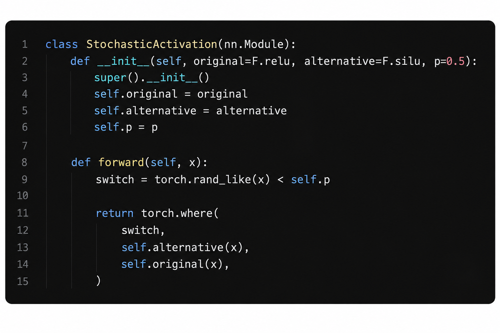
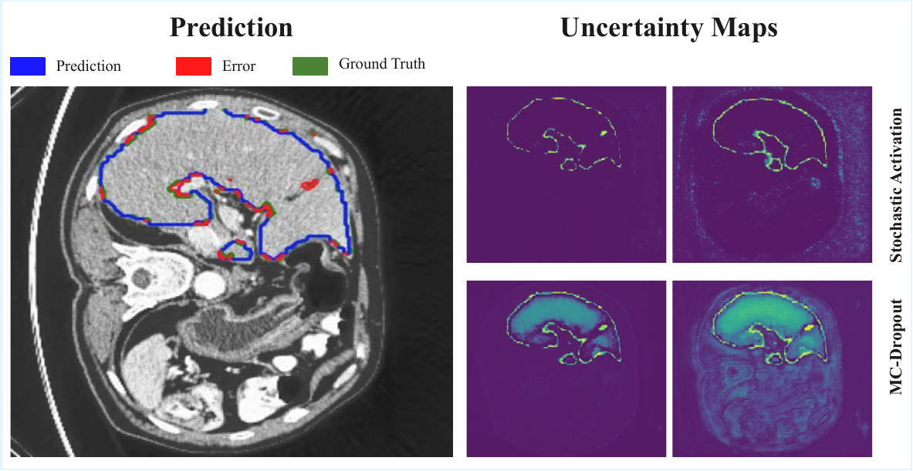
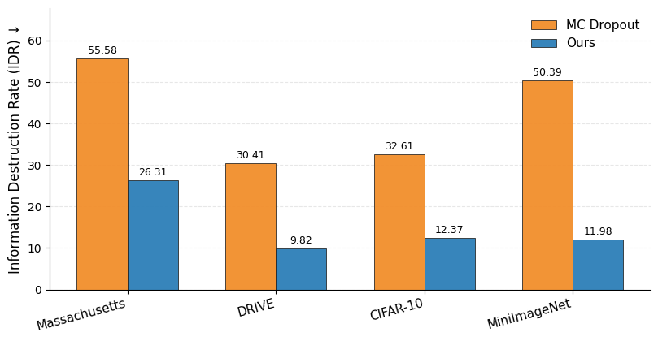
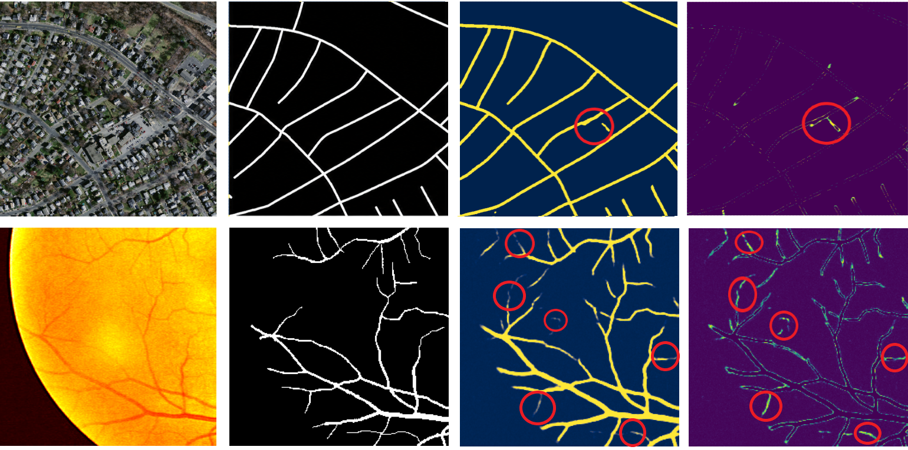

Stochastic Nonlinearities Improve
Uncertainty Estimation
1NeuraVision Lab, Bilkent University
British Machine Vision Conference · BMVC 2026
Paper Video
An 8-minute presentation covering the motivation, stochastic activation mechanism, information preservation, experiments, and main results.
Abstract
Reliable uncertainty estimation is important across visual recognition tasks, providing information about the confidence and reliability of model predictions. Many uncertainty estimation methods obtain predictive diversity through mechanisms that suppress intermediate features, perturb the input, or require substantial additional computation.
We reframe stochastic activation switching as a lightweight mechanism for uncertainty estimation. The method samples between nonlinear activation functions, inducing predictive diversity while keeping intermediate feature pathways active. This enables uncertainty estimation from a single trained model without the training cost of ensembles, task-specific uncertainty heads, or architectural redesign.
Across classification, semantic segmentation, and out-of-distribution detection—with convolutional and transformer-based architectures—stochastic activation switching improves uncertainty quality while preserving competitive primary-task performance.
Stochastic Activation Switching
Each activation unit samples between the backbone’s native activation and an alternative nonlinearity. Instead of deleting features, the method perturbs the nonlinear transformation applied to them while keeping the intermediate feature pathways available.
The same stochastic mechanism is used during training and inference. At test time, repeated activation configurations produce a stochastic activation trajectory: multiple predictions from the same learned parameters but different nonlinear pathways.

A drop-in stochastic nonlinearity
The switch remains stochastic during inference. This is important: repeated activation configurations are exactly what create the predictive distribution used for uncertainty estimation.
We use the backbone’s native activation with SiLU for classification and Tanh for segmentation.
Sample activation choices and optimize the standard task loss.
At inference, keep one learned model and resample activation configurations.
Use the mean as prediction and empirical variance as uncertainty.
Preserving Structure Under Stochasticity
MC Dropout creates diversity by masking activations. Stochastic activation switching instead changes how features are transformed while keeping their pathways active.

Information Preservation
Information Destruction Rate compares estimated layer input–output information under stochastic inference with a deterministic reference. Lower is better. IDR is used only for analysis—not as an additional training loss.
Across Massachusetts Roads, DRIVE, CIFAR-10, and MiniImageNet, stochastic activation switching yields substantially lower IDR than MC Dropout.

Quantitative Results
Browse every reported segmentation and classification table without a long wall of rows. Choose a result family, then slide between datasets.
Uncertainty Near Difficult Predictions
The uncertainty maps are obtained from the variance across five stochastic activation trajectories.

Predictive diversity does not have to come from masking features or training multiple models.
By resampling nonlinear activation choices inside a single trained network, stochastic activation switching produces multiple functional pathways while keeping intermediate features available. Their disagreement gives a practical uncertainty signal without an auxiliary uncertainty head or architectural redesign.
Current trade-off: repeated stochastic passes add inference cost, and the activation pair influences the balance between predictive performance and calibration.
BibTeX
@inproceedings{sarhangzadeh2026stochastic,
title = {Stochastic Nonlinearities Improve Uncertainty Estimation},
author = {Sarhangzadeh, Mohammad and Shebly, Amirreza M. and Oner, Doruk},
booktitle = {British Machine Vision Conference (BMVC)},
year = {2026}
}